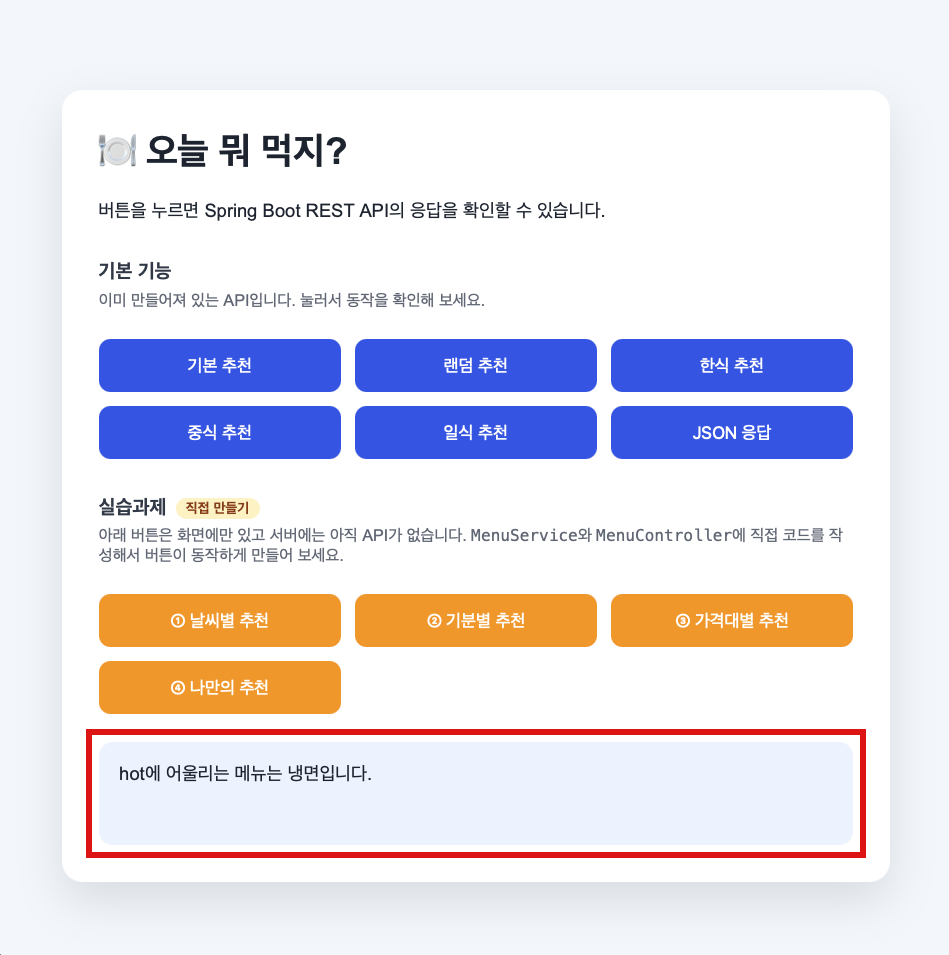
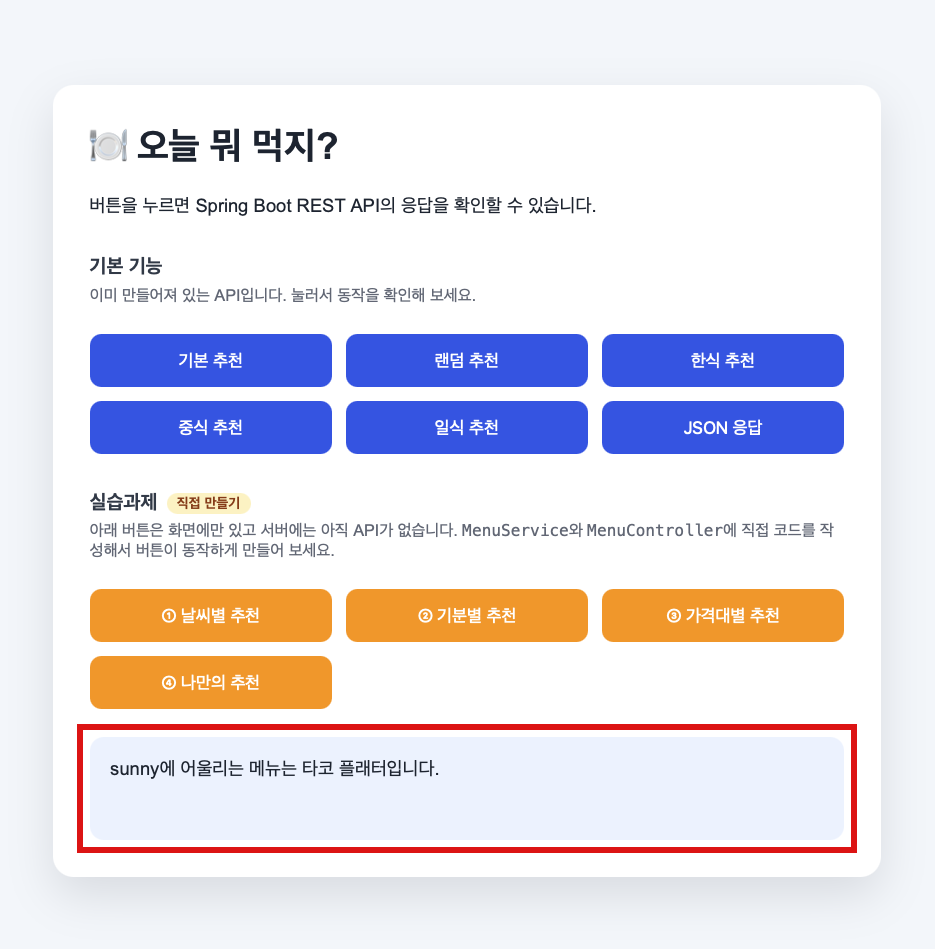
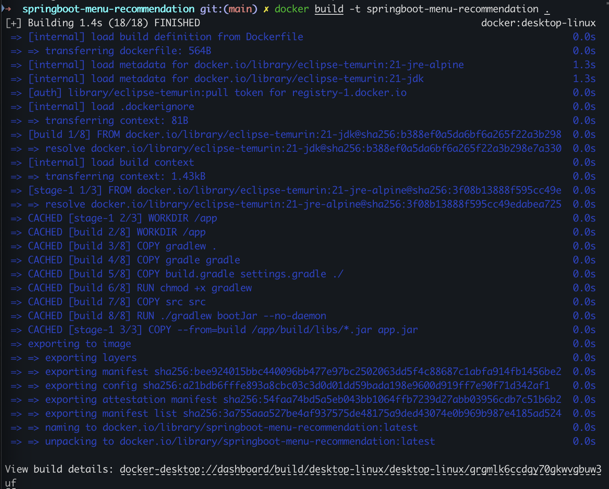
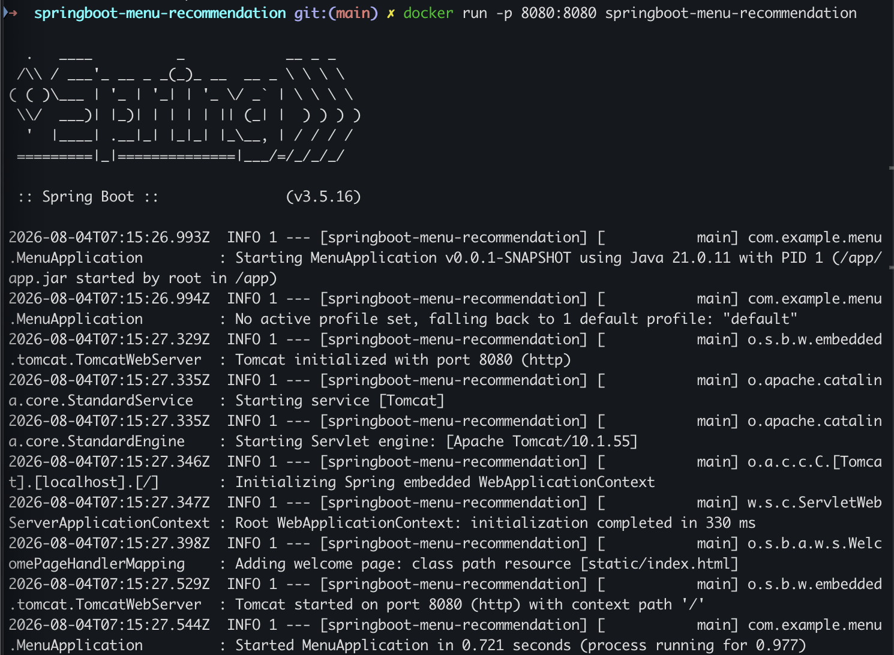
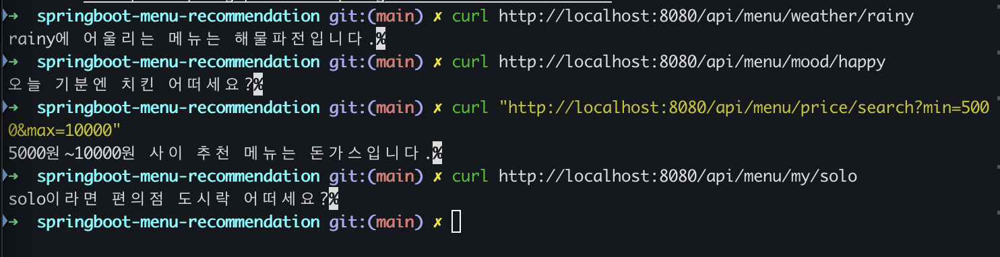
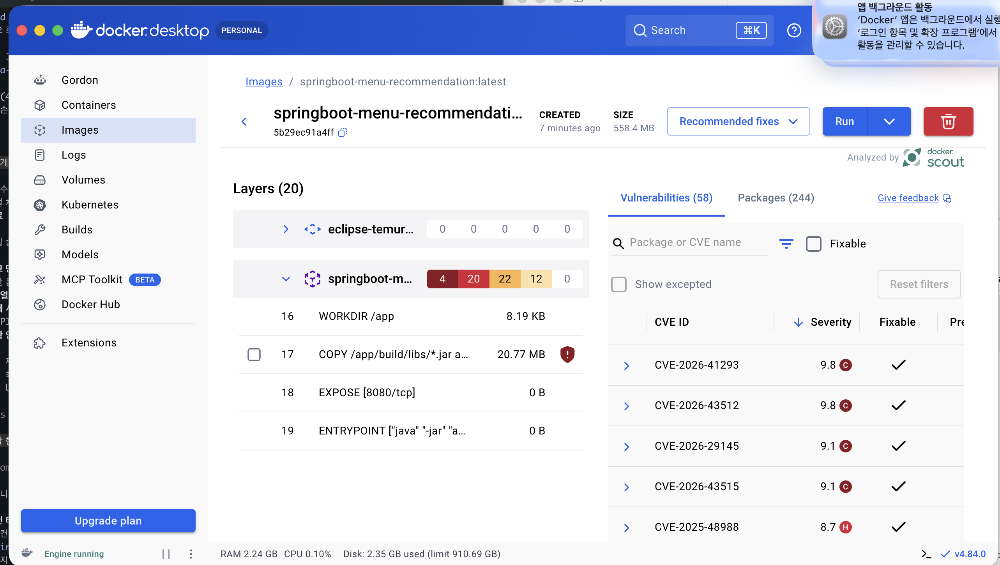
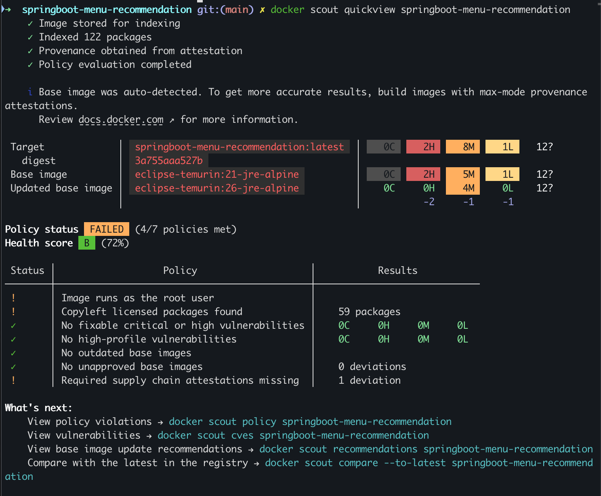

Spring Boot 메뉴 추천 API 실습
실습과제 구현 · 자체 개선 · Docker 컨테이너화 리포트
| API | 설명 |
|---|---|
GET /api/hello/{name} | 이름을 받아 인사말 반환 |
GET /api/menu | 고정된 기본 추천 |
GET /api/menu/random | 메뉴 목록 중 무작위 추천 |
GET /api/menu/{category} | korean/chinese/japanese/snack 카테고리별 추천 |
GET /api/menu/json/{category} | 카테고리별 추천을 JSON(MenuResponse)으로 응답 |
MenuService Bean을 MenuController가 생성자 주입으로 사용하는 구조를 학습했습니다.
| 과제 | API | 로직 |
|---|---|---|
| ① 날씨별 추천 | GET /api/menu/weather/{weather} | sunny/rainy/hot/cold → switch 분기 |
| ② 기분별 추천 | GET /api/menu/mood/{mood} | happy/sad/tired/stressed → switch 분기 |
| ③ 가격대별 추천 | GET /api/menu/price/search?min=&max= | @RequestParam으로 두 값을 받아 구간별 추천 |
| ④ 나만의 추천 | GET /api/menu/my/{companion} | solo/friends/family (같이 먹는 사람 기준, 자유 설계) |
기존 recommendByCategory / menuByCategory와 동일한 구조(Controller → Service, @PathVariable/@RequestParam, switch 분기)를 그대로 반복 적용해서 만들었습니다.
4개 API 구현이라는 최소 요구사항을 채운 뒤, 요구되지 않은 부분까지 스스로 점검하며 아래 5가지를 직접 찾아서 개선했습니다. 특히 ①번은 단순 버그 수정이 아니라, "실습 화면이 항상 같은 값만 테스트한다"는 구조적 한계를 발견하고 고친 것이라 가장 신경 쓴 차별화 포인트입니다.
| 항목 | Before | After |
|---|---|---|
| ① index.html 하드코딩 제거 | 버튼이 rainy/happy/min=5000&max=10000/solo 등 고정값 하나만 호출 → 매번 눌러도 같은 결과만 확인 가능 | 클릭할 때마다 유효한 값 후보 중 하나를 무작위로 골라 호출 → 반복 클릭만으로 각 API의 switch 분기(4가지 날씨, 4가지 기분 등)를 전부 검증할 수 있는 테스트 화면으로 발전 |
| ② 가격대별 추천 현실성 수정 | 1만원~2만원 구간에 "오마카세" 추천 (비현실적) | "스테이크 정식"으로 수정 — 실제 가격대에 맞는 메뉴로 개선 |
| ③ 응답 형식 통일 | 기분별 추천만 유독 JSON 응답 | 다른 API와 통일성 있게 텍스트 응답으로 변경 |
| ④ 개발 편의성 패치 | bootRun 후 매번 브라우저 직접 열어야 함 | 서버가 응답 가능해지는 순간 자동으로 기본 브라우저에서 화면을 열도록 build.gradle에 로직 추가 (macOS open 명령 사용) |
| ⑤ 오탈자/띄어쓰기 수정 | 날씨별 추천 응답 문구 띄어쓰기 누락 | 수정 완료 |
"① 날씨별 추천" 버튼을 연속으로 두 번 눌렀을 때의 화면입니다. 하드코딩이었다면 매번 rainy로 고정되어 같은 응답만 나왔겠지만, 랜덤 호출로 바꾼 뒤에는 클릭할 때마다 다른 날씨 값이 호출되어 다른 메뉴가 나오는 것을 확인할 수 있습니다.

hot이 호출되어 "hot에 어울리는 메뉴는 냉면입니다." 응답
sunny가 호출되어 "sunny에 어울리는 메뉴는 타코 플래터입니다." 응답 (하드코딩이 풀렸다는 직접적인 증거)멀티스테이지 빌드로 Dockerfile을 작성했습니다 — 1단계(eclipse-temurin:21-jdk)에서 Gradle Wrapper로 bootJar를 실행하고, 2단계(eclipse-temurin:21-jre-alpine)에 결과 jar만 복사해서 최종 이미지 용량을 줄였습니다.
docker build -t springboot-menu-recommendation . docker run -p 8080:8080 springboot-menu-recommendation



원인 파악: 취약점 대부분이 OS 베이스 이미지가 아니라, 지원 종료된 Spring Boot 3.4.5 프레임워크 의존성(2025-12-31 OSS 지원 종료)에서 나온다는 것을 확인했습니다.
조치: ① 베이스 이미지를 eclipse-temurin:21-jre → eclipse-temurin:21-jre-alpine으로 변경, ② Spring Boot 버전을 3.4.5 → 3.5.16(지원 중)으로 업그레이드


| 항목 | Before | After |
|---|---|---|
| Critical | 4 | 0 |
| High | 22 | 2 |
| Medium | 27 | 8 |
| Low | 13 | 1 |
| Health score | D (50%) | B (72%) |
| 이미지 용량 | 약 141MB | 약 92MB |